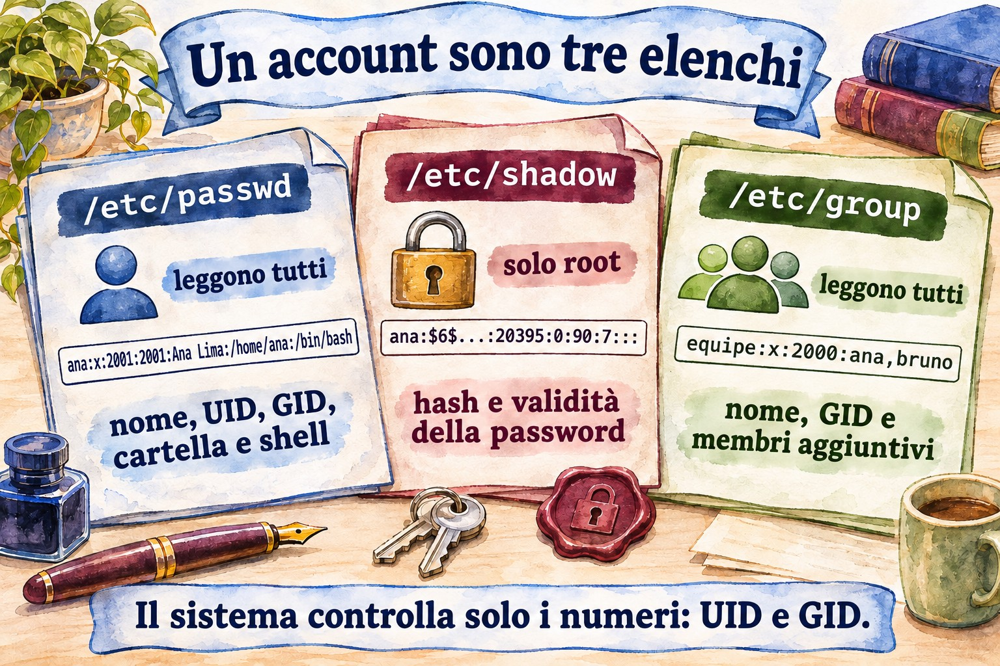
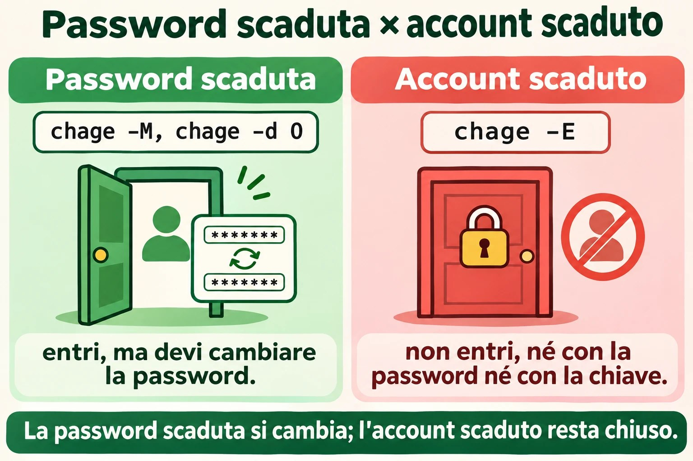
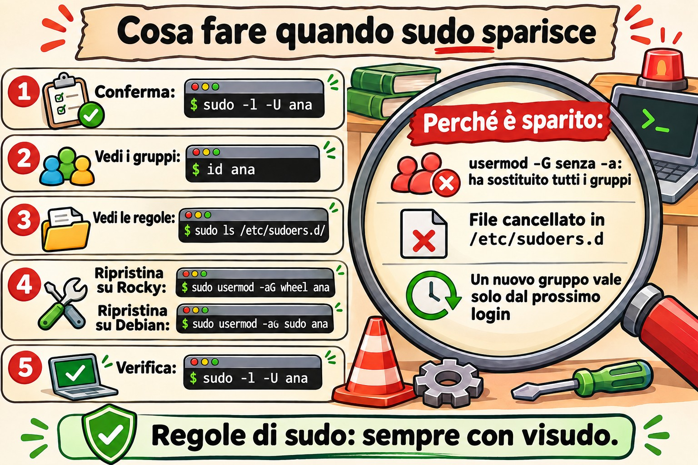
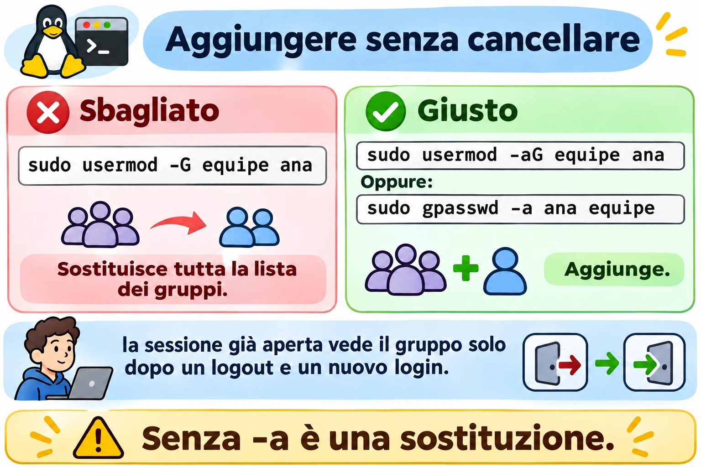
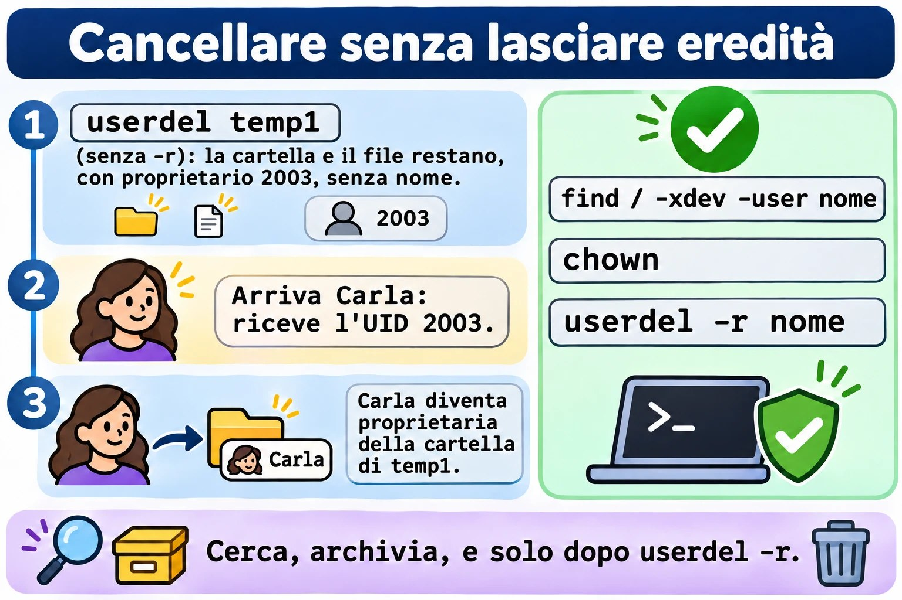
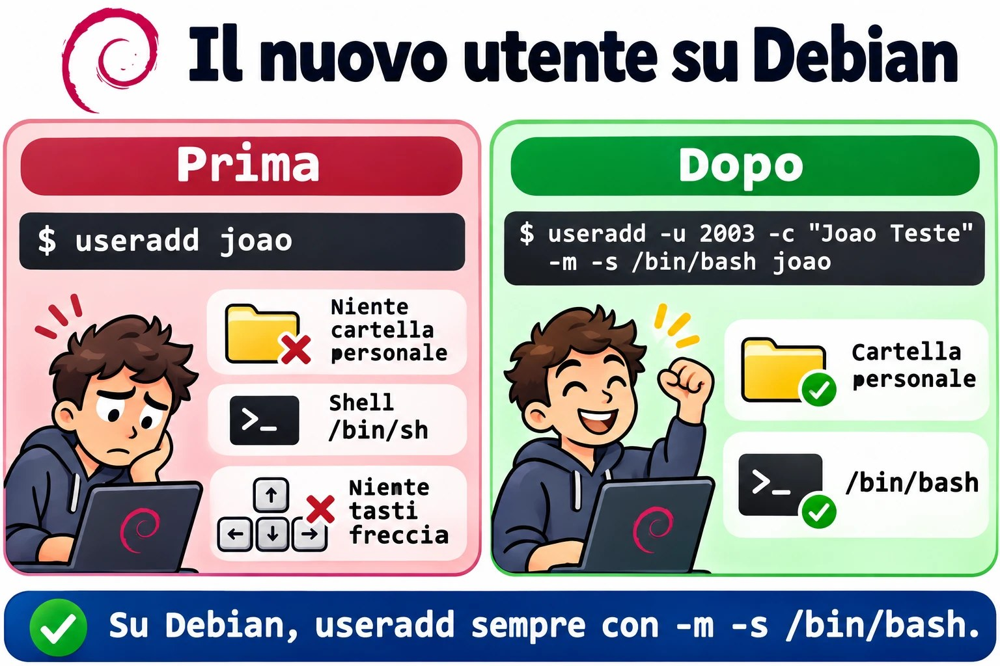

Lezione 2.6 · Utenti e gruppi
Sesta lezione del Modulo 2. Creare un utente richiede un comando. Il lavoro vero sta nel resto del ciclo: lo stagista che arriva il lunedì, la collega che cambia reparto e ha bisogno di un altro gruppo, il collaboratore esterno con una scadenza, il dipendente licenziato alle 17 che non deve più poter entrare alle 17:05. Ogni fase ha un modo giusto e un modo che sembra giusto. usermod -G senza -a toglie la persona da tutti gli altri gruppi senza avvisare. useradd su Debian crea l'account senza home directory. passwd -l blocca la password, ma la chiave SSH continua a entrare. E userdel fatto senza attenzione lascia file che il prossimo utente creato eredita. Oggi fai il ciclo completo sulle due VM, con gli stessi numeri su entrambe, e crei da rocky-lab gli utenti della debian-lab, usando la chiave e l'alias deb della Lezione 2.5.
| Scheda | Lezione 2.6 |
|---|---|
| Modulo | M2 · Sistema, utenti e permessi, lezione 6 di 8 |
| Quando | Settimana 5 |
| Alla fine sei in grado di | Leggere /etc/passwd, /etc/shadow e /etc/group campo per campo; sapere da dove arrivano i valori predefiniti di un account nuovo (useradd -D, /etc/login.defs, /etc/skel); creare utenti e gruppi con UID e GID scelti, uguali su più server; aggiungere e togliere persone dai gruppi senza cancellare gli altri; forzare il cambio password e impostare la scadenza di password e account; bloccare davvero un account, chiave SSH compresa; cancellare un account senza lasciare file orfani; seguire una procedura quando un utente non riesce a entrare |
| Prerequisiti | Lezione 2.5 (tipi di account in base all'UID; sudo; la chiave di rocky-lab installata su debian-lab e l'alias deb); Lezione 1.4 (proprietario e permessi letti con ls -l) |
| Durata | Circa 2h30 |
| Snapshot | m2a6-inicio e m2a6-fim su entrambe le VM |
1 · Riscaldamento
Tre domande, a memoria. Scrivi le risposte; le Soluzioni le verificano alla fine.
- Lanci
usermod -G financeiro anaper mettere Ana nel gruppo financeiro. Scommessa: resta nei gruppi in cui era già? - Un dipendente è stato licenziato. Lanci
passwd -l joao, che blocca la sua password. Scommessa: se ha una chiave SSH installata, riesce ancora a entrare? - Cancelli l'utente
tempconuserdel tempe, una settimana dopo, crei l'utentecarla. Scommessa: può succedere che Carla diventi proprietaria dei file che erano ditemp?
2 · Perché conta
Gli account sono la prima cosa che guarda un audit e la prima che cerca un attaccante. I rilievi si ripetono in quasi ogni server con qualche anno di vita: account di persone che se ne sono andate mesi fa, ancora attivi; un utente di servizio con shell /bin/bash e password; il gruppo wheel con nove persone quando ne servivano tre; file senza proprietario in /srv perché qualcuno ha cancellato l'account senza guardare cosa possedeva.
Il ciclo di vita di un account ha quattro momenti, e ognuno ha il suo errore classico:
| Momento | Cosa chiede l'azienda | L'errore classico |
|---|---|---|
| Ingresso | "Bruno inizia lunedì, stesso accesso di Ana" | Copiare a mano la riga di /etc/passwd, o dimenticare la home directory |
| Cambio | "Ana è passata alla contabilità" | usermod -G senza -a: esce da tutti gli altri gruppi, compreso quello di sudo |
| Scadenza | "Il collaboratore esterno resta fino al 31 dicembre" | Segnarlo su un foglio e dimenticarsene. La cosa giusta è far scadere l'account da solo |
| Uscita | "João è stato licenziato, taglia tutto adesso" | passwd -l e basta. La sua chiave SSH continua a entrare |
E c'è il problema che compare solo quando hai più di un server: lo stesso utente con numeri diversi su ciascuno. Ana è UID 1001 su un server e 1003 sull'altro. Quando un disco o una cartella di rete passa da uno all'altro, i suoi file risultano di un'altra persona. Il sistema memorizza il numero, non il nome.
3 · Modello mentale
Un account è una riga in tre file di testo. Il nome è per te; il sistema memorizza e controlla solo i numeri. Ogni comando di questa lezione è un modo sicuro di modificare quelle righe.
/etc/passwd (todos leem) ana:x:2001:2001:Ana Lima:/home/ana:/bin/bash
│ │ │ │ │ │
│ UID GID descrição pasta shell
└─ a senha não está aqui: "x" = veja o shadow
/etc/shadow (só o root lê) ana:$6$...:20395:0:90:7:::
│ │ │ │ │
hash última mín máx aviso (+ inativa, expira)
troca
/etc/group (todos leem) equipe:x:2000:ana,bruno
│ │ │
nome GID membros extras (o grupo principal não aparece aqui)
/etc/skel/ modelo copiado para a pasta pessoal de cada conta nova
/etc/login.defs padrões: faixa de UID, validade de senha, criar pastaQuattro idee reggono la lezione:
| Idea | Cosa significa | Conseguenza |
|---|---|---|
| Il sistema memorizza numeri | File, processi e permessi memorizzano UID e GID, non nomi | Cancellare un account non cancella i suoi file; il prossimo utente con lo stesso numero eredita tutto |
| Gruppo principale e gruppi supplementari | Il principale è nel 4º campo di /etc/passwd; i supplementari, nel 4º campo di /etc/group | usermod -G sostituisce l'intera lista dei supplementari; -aG ne aggiunge uno |
| Password e account sono cose diverse | La password può essere bloccata con l'account attivo, e l'account può scadere con la password valida | Per tagliare davvero l'accesso, fai scadere l'account; bloccare la password non ferma la chiave SSH |
| I gruppi valgono al login | Il processo riceve la lista dei gruppi quando inizia la sessione | Chi è stato messo in un gruppo ottiene l'accesso solo in una sessione nuova |


4 · Concetto a livelli
Essenziale
Leggere le tre liste. Usa getent invece di aprire il file: mostra la stessa riga e funziona anche quando gli account arrivano da una directory centrale, come Active Directory, argomento di un modulo più avanti.
getent passwd student
getent group student
sudo getent shadow student | cut -d: -f1,3- # senza l'hash
id studentstudent:x:1000:1000:Student:/home/student:/bin/bash
student:x:1000:
student:20380:0:99999:7:::
uid=1000(student) gid=1000(student) groups=1000(student),10(wheel)cut toglie il secondo campo, l'hash della password. Non è la password, ma non c'è motivo di lasciarlo a schermo, nella cronologia del terminale o in un ticket. I campi di /etc/shadow:
| Campo | Esempio | Significa |
|---|---|---|
| 1 · nome | student | L'account |
| 2 · hash | $6$... o $y$... | La password codificata. ! o !! all'inizio = password bloccata; * = non ha mai avuto password |
| 3 · ultimo cambio | 20380 | Giorni dal 1º gennaio 1970. 0 = cambiarla al prossimo login |
| 4 · minimo | 0 | Giorni da aspettare prima di poterla cambiare di nuovo |
| 5 · massimo | 99999 | Giorni prima che la password scada. 99999 = mai, in pratica |
| 6 · avviso | 7 | Giorni di preavviso prima della scadenza |
| 7 · inattività | vuoto | Giorni dopo la scadenza in cui si può ancora entrare e cambiarla |
| 8 · scadenza | vuoto | Data in cui scade l'account, in giorni dal 1970 |
Nessuno legge questi numeri a memoria. chage -l li traduce:
sudo chage -l studentCreare un utente e un gruppo. Lo stesso comando funziona uguale su Rocky e su Debian quando non ti fidi dei valori predefiniti:
sudo groupadd -g 2000 equipe
sudo useradd -u 2001 -c "Ana Lima" -m -s /bin/bash ana
sudo passwd ana| Opzione | Fa |
|---|---|
-u 2001 | Sceglie l'UID. Senza, useradd prende il più alto UID in uso + 1 |
-c "Ana Lima" | La descrizione, il nome completo |
-m | Crea la home directory, copiando /etc/skel |
-s /bin/bash | La shell |
-g grupo | Il gruppo principale. Senza, crea un gruppo con lo stesso nome dell'account |
-G a,b | I gruppi supplementari già alla creazione |
passwd ana chiede due volte la nuova password. Come root, non chiede la vecchia.
Aggiungere e togliere dai gruppi.
sudo usermod -aG equipe ana # aggiunge. Il -a è ciò che conta
sudo gpasswd -a bruno equipe # lo stesso, in un altro modo
sudo gpasswd -d bruno equipe # toglie da un solo gruppo
getent group equipeCancellare.
sudo userdel -r ana # cancella l'account, la home directory e la casella di posta locale
sudo groupdel equipeIntermedio
Da dove arrivano i valori predefiniti. Un account nuovo nasce da tre posti:
| Posto | Cosa definisce | Vedi con |
|---|---|---|
/etc/login.defs | Intervallo di UID e GID per persone e sistema; scadenza password predefinita; se crea la home directory; permessi della home; gruppo con il nome dell'account | grep -v -E '^#|^$' /etc/login.defs |
/etc/default/useradd | Shell predefinita, directory base, /etc/skel, account inattivo | useradd -D |
/etc/skel/ | I file che finiscono nella nuova home directory | ls -la /etc/skel |
Modificare uno qualsiasi di questi vale solo per gli account creati dopo. Mettere PASS_MAX_DAYS 90 in login.defs non cambia la scadenza di nessuno di quelli esistenti; per loro serve chage.
useradd × adduser. Su Rocky, adduser è solo un altro nome di useradd. Su Debian, adduser è un altro programma: interattivo, crea la home, chiede password e nome, e usa valori predefiniti propri, da /etc/adduser.conf. Negli script e nei compiti che richiedono esattezza, usa useradd con le opzioni esplicite: il comando è lo stesso nelle due famiglie e fa esattamente ciò che c'è scritto.
Scadenza di password e account.
sudo chage -d 0 ana # cambiare la password al prossimo login
sudo chage -M 90 -m 1 -W 7 ana # scade tra 90 giorni, attende 1 per cambiarla, avvisa 7 prima
sudo chage -E 2026-12-31 bruno # l'ACCOUNT scade in questa data
sudo chage -E -1 bruno # toglie la data di scadenza
sudo chage -l brunopasswd -e ana fa lo stesso di chage -d 0. La differenza tra password scaduta e account scaduto è quella che confonde di più:
Password scaduta (-M, -d 0) | Account scaduto (-E) | |
|---|---|---|
| Cosa succede al login | Entra, ma è obbligato a cambiare la password prima | Non entra, né con password né con chiave |
| Messaggio | You are required to change your password immediately | Your account has expired; please contact your system administrator |
| A cosa serve | Policy delle password, password iniziale | Collaboratore esterno con scadenza, licenziamento |
Bloccare × far scadere × togliere la shell. Tre blocchi, ognuno chiude una porta:
| Comando | Chiude | Non chiude |
|---|---|---|
usermod -L o passwd -l | Login con password | Chiave SSH, su fatto da root, processi già in esecuzione |
usermod -e 1 o chage -E 0 | Ogni login che passa da PAM, con password o chiave | Processi già in esecuzione |
usermod -s /sbin/nologin | Shell interattiva | Trasferimento di file via SFTP, se configurato senza shell; processi in esecuzione |
Per tagliare davvero una persona: far scadere l'account, bloccare la password e terminare tutto ciò che è in esecuzione con loginctl terminate-user nome o pkill -u nome.
I gruppi valgono al login. Il kernel consegna la lista dei gruppi al processo quando inizia la sessione. Se hai messo Ana nel gruppo equipe adesso, la sessione che aveva già aperta continua a non averlo:
id ana # legge /etc/group di adesso: mostra equipe
id # eseguito DENTRO la vecchia sessione di Ana: non lo mostraDeve uscire e rientrare. Per provare subito, senza uscire, newgrp equipe apre una shell nuova già con il gruppo.


Ponte Windows
| Windows | Linux | Differenza che conta |
|---|---|---|
lusrmgr.msc, net user, New-LocalUser | useradd, usermod, userdel | Su Linux tutto è testo: puoi leggere e verificare con getent e grep |
SID (S-1-5-21-...-1001) | UID | Il SID è unico per macchina o dominio; l'UID è solo un numero, e lo stesso numero su due server è la stessa persona per i file |
| Gruppo Administrators | wheel (Rocky) o sudo (Debian) | Far parte del gruppo dà il diritto di chiedere con sudo, non di poter fare direttamente |
| "L'utente deve cambiare la password al prossimo accesso" | chage -d 0 | Uguale |
| "L'account scade il" | chage -E data | Uguale, e blocca anche la chiave SSH |
| "Account disabilitato" | chage -E 0, più usermod -L | passwd -l da solo non è "disabilitare": la chiave SSH continua |
Add-LocalGroupMember | usermod -aG o gpasswd -a | Su Windows non esiste l'errore di dimenticare il -a |
Profilo predefinito (C:\Users\Default) | /etc/skel | Uguale: copiato alla creazione, solo per gli account nuovi |
| Un account cancellato lascia un SID orfano nei permessi | Un account cancellato lascia un UID orfano nei file | Su Linux, il prossimo utente con lo stesso UID eredita tutto |
Avanzato
UID e GID uguali su tutti i server. Quando i server condividono file (NFS, dischi che cambiano macchina, backup ripristinato altrove), l'UID deve essere lo stesso ovunque. Senza una directory centrale, la regola è scegliere il numero alla creazione, con -u e -g, e annotarlo. Un intervallo riservato alle persone dell'azienda, lontano dal 1000 usato dall'installazione, evita collisioni. Con una directory centrale, il numero arriva da lì, argomento di un modulo più avanti.
vipw e vigr. Se devi modificare /etc/passwd o /etc/group a mano, usa sudo vipw e sudo vigr. Bloccano il file mentre modifichi, così nessun useradd scrive nello stesso momento, e alla fine chiedono se vuoi modificare anche shadow o gshadow. Lo stesso ruolo di visudo per sudoers.
pwck e grpck. Controllano la coerenza delle quattro liste: righe malformate, home directory inesistente, gruppo inesistente, account in passwd senza riga in shadow. Con -r, solo leggono e non cambiano nulla:
sudo pwck -r
sudo grpck -rLe copie con -. Ogni volta che un comando del pacchetto shadow scrive /etc/passwd, /etc/shadow, /etc/group o /etc/gshadow, conserva la versione precedente con un - in fondo al nome: /etc/group-. È il tuo "annulla" di un passo. diff /etc/group- /etc/group mostra esattamente cosa ha cambiato l'ultimo comando.
Password di gruppo e gshadow. /etc/gshadow contiene la password di gruppo e gli amministratori di gruppo (gpasswd -A). La password di gruppo non la usa quasi nessuno; l'amministratore di gruppo è utile quando il responsabile di un reparto può aggiungere e togliere persone dal suo gruppo senza avere sudo.
Account di sistema. useradd -r crea un account nell'intervallo di sistema (sotto 1000), senza home e, se lo chiedi, senza shell: useradd -r -s /sbin/nologin -d /var/lib/app app. È così che un pacchetto crea l'utente di un servizio.
Algoritmo dell'hash. L'inizio del secondo campo di shadow indica l'algoritmo: $6$ è SHA-512, predefinito su Rocky 9; $y$ è yescrypt, predefinito su Debian 13. L'algoritmo viene da ENCRYPT_METHOD in login.defs e dalla configurazione di PAM, e vale solo per le password cambiate dopo.
5 · Rocky × Debian
| Cosa | Rocky 9 | Debian 13 |
|---|---|---|
useradd crea la home senza -m | Sì (CREATE_HOME yes in login.defs) | No. Senza -m, l'account nasce senza home |
Shell predefinita di useradd | /bin/bash | /bin/sh (verifica con useradd -D) |
adduser | Altro nome di useradd | Programma a sé, interattivo, con /etc/adduser.conf |
Gruppo di sudo | wheel | sudo |
| Intervallo di UID per le persone | da 1000 a 60000 | da 1000 a 60000 |
| Algoritmo dell'hash | SHA-512 ($6$) | yescrypt ($y$) |
Password bloccata in shadow | !! per account creato senza password; ! dopo passwd -l | ! |
passwd -S | ana PS ... con l'algoritmo tra parentesi | ana P ... |
/etc/skel | .bashrc, .bash_profile, .bash_logout | .bashrc, .profile, .bash_logout |
Casella di posta locale cancellata da userdel -r | /var/spool/mail/nome | /var/mail/nome, se esiste |
| Shell degli account di sistema | /sbin/nologin | /usr/sbin/nologin |
lastlog (ultimo login di ogni account) | Disponibile | Può mancare su Debian 13; usa last o wtmpdb last |
6 · Lab guidato
In questo lab rocky-lab è la tua postazione di lavoro: crei gli account lì e, con la chiave e l'alias deb della Lezione 2.5, crei gli stessi account su debian-lab senza aprire un'altra sessione. Tieni comunque un terminale aperto su ogni VM, dal tuo PC: alcuni passi provano il login di un altro utente, e ti conviene avere intatta la tua sessione di student nel frattempo.


Password: i passi ti chiedono di impostare password per gli utenti di prova. Usa una password da laboratorio che usi solo su queste VM, e digitala tu quando passwd la chiede.
Passo 0 · Snapshot e la strada verso debian-lab
Su Proxmox, crea lo snapshot m2a6-inicio di entrambe le VM. Su rocky-lab, verifica che la chiave e l'alias della lezione scorsa continuino a funzionare:
eval "$(ssh-agent -s)"; ssh-add
ssh -o BatchMode=yes deb 'hostname; id -un'La risposta deve essere debian-lab e student, senza alcuna domanda. Se chiede la password, torna alla procedura del Passo 8 della Lezione 2.5 prima di proseguire: tutto il lab dipende da questo percorso.
Passo 1 · Le tre liste, campo per campo
Su rocky-lab:
getent passwd student root chronyd nobody
getent group wheel student
sudo getent shadow student root | cut -d: -f1,3-
sudo getent shadow student | cut -c1-12L'ultimo comando mostra solo l'inizio dell'hash: student:$6$.... $6$ è SHA-512. Ora la stessa cosa su debian-lab, da dove ti trovi:
ssh deb 'getent passwd student; getent group sudo'
ssh -t deb 'sudo getent shadow student | cut -c1-12'Su Debian l'inizio è $y$: yescrypt. -t serve perché sudo abbia dove chiedere la tua password, come nella lezione scorsa. Confronta anche la riga di root nello shadow di rocky-lab: se il secondo campo inizia con ! o è *, la password di root è bloccata o non è mai esistita, il che combacia con passwd -S root della Lezione 2.5.
Ora conta gli account di ogni tipo:
awk -F: '$3 >= 1000 && $3 < 65534 {print $1, $3, $7}' /etc/passwd
awk -F: '$3 > 0 && $3 < 1000' /etc/passwd | wc -lIl primo elenca le persone, con la shell. Il secondo conta gli account di sistema: decine, uno per servizio. nobody, con UID 65534, è un account speciale per "nessuno" e resta fuori da entrambi.
Passo 2 · Da dove arrivano i valori predefiniti
Su entrambe le VM, eseguendo ogni riga su una e poi sull'altra (su debian-lab, prefissa con ssh deb):
/usr/sbin/useradd -D
grep -E '^(UID_MIN|UID_MAX|SYS_UID_MAX|PASS_MAX_DAYS|PASS_WARN_AGE|CREATE_HOME|USERGROUPS_ENAB|HOME_MODE|ENCRYPT_METHOD)' /etc/login.defs
ls -la /etc/skelAnnota tre differenze: lo SHELL= di useradd -D, la riga CREATE_HOME (che esiste su Rocky e non su Debian) e i file di /etc/skel. Spiegano la Decisione seguente e il Guasto B.
Decidi 1 · L'utente su Debian. Devi creare l'utente bruno su debian-lab, da script, in modo che entri via SSH con home directory e Bash. Quale comando?
- A)
sudo useradd bruno - B)
sudo useradd -m -s /bin/bash bruno - C)
sudo adduser bruno - D)
sudo useradd -s /bin/bash bruno
Scegli un'opzione prima di continuare.
| Se hai scelto | Risultato | Perché |
|---|---|---|
| A | ❌ Sbagliato | Su Debian, senza -m non c'è home directory, e la shell predefinita è /bin/sh. Bruno entra, riceve Could not chdir to home directory e un prompt $ senza cronologia né frecce. È il Guasto B di questa lezione. |
| B | ✅ Giusto | -m crea la home e copia /etc/skel; -s imposta la shell. Lo stesso comando fa la stessa cosa su Rocky. Negli script, l'esplicito batte il predefinito. |
| C | ⚠️ Funziona, ma | Su Debian adduser crea tutto correttamente, ma è interattivo: chiede password, nome completo, telefono. In uno script si blocca in attesa di risposta, a meno che tu non passi le opzioni per non chiedere. E su Rocky è solo useradd, con un comportamento diverso. |
| D | ❌ Sbagliato | La shell è giusta, ma senza -m continua a mancare la home. Metà del problema. |
Da ricordare: negli script e nei compiti che richiedono esattezza, useradd -m -s /bin/bash, sempre. Non fidarti del valore predefinito della distribuzione.
Passo 3 · Gli stessi utenti, con gli stessi numeri, su entrambe le VM
Su rocky-lab:
sudo groupadd -g 2000 equipe
sudo useradd -u 2001 -c "Ana Lima" -m -s /bin/bash ana
sudo useradd -u 2002 -c "Bruno Costa" -m -s /bin/bash bruno
sudo passwd ana
sudo passwd bruno
id ana; id bruno
ls -la /home/anaNota: senza -g, ognuno ha ottenuto un gruppo con il proprio nome, con lo stesso numero dell'UID (gid=2001(ana)). È USERGROUPS_ENAB yes in login.defs. La directory /home/ana contiene i file di /etc/skel, tutti di ana, e la directory è drwx------: entra solo lei.
Ora debian-lab, da rocky-lab. Un comando alla volta, per vedere dove fallirebbe:
ssh -t deb 'sudo groupadd -g 2000 equipe'
ssh -t deb 'sudo useradd -u 2001 -c "Ana Lima" -m -s /bin/bash ana'
ssh -t deb 'sudo useradd -u 2002 -c "Bruno Costa" -m -s /bin/bash bruno'
ssh -t deb 'sudo passwd ana'
ssh -t deb 'sudo passwd bruno'Verifica che i numeri coincidano:
for u in ana bruno; do echo "rocky: $(id $u)"; echo "debian: $(ssh deb id $u)"; doneLe righe devono essere uguali due a due. Nella vita reale, è questo che garantisce che un backup di /home/ana di rocky-lab, ripristinato su debian-lab, continui a essere di Ana.
Prova il login vero, da rocky-lab a debian-lab, con la password che hai impostato:
ssh ana@debian-lab 'pwd; echo $SHELL; ls -a'Risposta: /home/ana, /bin/bash, e i file di skel di Debian, con .profile al posto di .bash_profile.
Passo 4 · Gruppi: aggiungere senza cancellare
Su rocky-lab, prima una sessione di Ana che resterà aperta. Nel terminale di rocky-lab che hai aperto dal PC, entra come Ana e lasciala lì:
ssh ana@localhost
idCompare solo con groups=2001(ana). Nell'altro terminale, come student:
Decidi 2 · Mettere Ana nel gruppo. Ana deve entrare nel gruppo equipe, senza perdere nessun gruppo che ha già, oggi o in futuro. Quale comando?
- A)
sudo usermod -G equipe ana - B)
sudo usermod -aG equipe ana - C)
sudo vim /etc/groupe aggiungereanain fondo alla riga diequipe - D)
newgrp equipe
Scegli un'opzione prima di continuare.
| Se hai scelto | Risultato | Perché |
|---|---|---|
| A | ❌ Sbagliato | Oggi sembra funzionare, perché Ana non ha altri gruppi supplementari. Ma -G senza -a sostituisce l'intera lista: se fosse nel wheel, ne uscirebbe. Usa sempre il comando giusto, non quello che funziona oggi. È il Guasto A. |
| B | ✅ Giusto | Il -a di append aggiunge il gruppo e mantiene gli altri. sudo gpasswd -a ana equipe fa lo stesso ed è altrettanto giusto. |
| C | ⚠️ Funziona, ma | Il risultato nel file è lo stesso, ma modificare a mano rischia un errore di battitura che rompe la riga, e vim non blocca il file contro un altro comando che scrive nello stesso momento. Se devi modificare a mano, usa sudo vigr. |
| D | ❌ Sbagliato | newgrp apre una shell tua con un altro gruppo attivo, e solo se ne fai già parte. Non mette nessuno in nessun gruppo. |
Da ricordare: un gruppo supplementare si aggiunge con usermod -aG o gpasswd -a. Senza -a, è una sostituzione.
Esegui quello giusto, e aggiungi Bruno nell'altro modo:
sudo usermod -aG equipe ana
sudo gpasswd -a bruno equipe
getent group equipe
diff /etc/group- /etc/groupgetent mostra equipe:x:2000:ana,bruno. diff mostra la riga prima e dopo l'ultimo comando: /etc/group- è la copia che gpasswd ha conservato.
Ora torna al terminale dove Ana è collegata:
id # dentro la vecchia sessione di Ana
id ana # cosa dice il sistema adessoIl primo non mostra equipe; il secondo sì. La sessione di Ana ha ricevuto la lista dei gruppi quando è iniziata. Esci (exit) e rientra con ssh ana@localhost: adesso id mostra equipe. Esci di nuovo.
Fai lo stesso su debian-lab, tramite deb:
ssh -t deb 'sudo usermod -aG equipe ana && sudo gpasswd -a bruno equipe && getent group equipe'

Passo 5 · Password iniziale e scadenza
Su rocky-lab, la policy aziendale: password iniziale cambiata al primo login, scadenza di 90 giorni, preavviso di 7. E Bruno è un collaboratore esterno, con contratto fino al 31 dicembre.
Decidi 3 · Password cambiata al primo login. Hai impostato una password iniziale per Ana e vuoi che sia obbligata a cambiarla al primo login. Quale comando?
- A)
sudo chage -d 0 ana - B)
sudo chage -M 0 ana - C)
sudo passwd -l ana - D) Cambiare
PASS_MAX_DAYSa0in/etc/login.defs
Scegli un'opzione prima di continuare.
| Se hai scelto | Risultato | Perché |
|---|---|---|
| A | ✅ Giusto | Porta la data dell'ultimo cambio al giorno zero. La password conta come scaduta, e il prossimo login obbliga a cambiarla. sudo passwd -e ana fa lo stesso. |
| B | ⚠️ Funziona, ma | È obbligata a cambiarla adesso, ma anche ogni volta dopo: con scadenza massima di zero giorni, la password nuova nasce già scaduta. Domani ti arriverà un ticket. |
| C | ❌ Sbagliato | Blocca la password. Non riesce nemmeno a entrare per cambiarla. |
| D | ❌ Sbagliato | login.defs vale solo per gli account creati dopo. Ana esiste già e non cambia nulla. |
Da ricordare: cambiare al prossimo login = chage -d 0. Scadenza = chage -M. Valore predefinito per gli account futuri = login.defs.
Applica la policy:
sudo chage -d 0 ana
sudo chage -M 90 -W 7 ana
sudo chage -E 2026-12-31 bruno
sudo chage -l ana
sudo chage -l bruno
sudo passwd -S anachage -l ana dice Last password change : password must be changed e Maximum number of days between password change : 90. Quello di Bruno dice Account expires : Dec 31, 2026.
Prova il primo login di Ana:
ssh ana@localhostDopo la password attuale, SSH mostra WARNING: Your password has expired. You must change your password now and login again!. Chiede di nuovo la password attuale e due volte quella nuova, poi chiude la connessione. Rientra con la password nuova: adesso entri direttamente. Esci.
Ripeti la policy su debian-lab:
ssh -t deb 'sudo chage -d 0 ana && sudo chage -M 90 -W 7 ana && sudo chage -E 2026-12-31 bruno && sudo chage -l bruno'Passo 6 · Tagliare l'accesso: cosa chiude ogni blocco
La richiesta: "Bruno è stato licenziato adesso, taglia l'accesso". Prima, prepara lo scenario che la vita reale di solito ha: Bruno ha una chiave SSH installata. Su rocky-lab, usa la tua chiave pubblica come se fosse la sua, solo per la prova:
sudo install -d -m 700 -o bruno -g bruno /home/bruno/.ssh
sudo install -m 600 -o bruno -g bruno ~/.ssh/id_ed25519.pub /home/bruno/.ssh/authorized_keys
ssh -o BatchMode=yes bruno@localhost idSei entrato come bruno, con la chiave. Ora il primo blocco, quello che usano quasi tutti:
sudo usermod -L bruno
sudo passwd -S bruno
ssh -o BatchMode=yes bruno@localhost idpasswd -S dice LK (Rocky) o L (Debian): password bloccata. E ssh entra comunque. Il blocco mette un ! davanti all'hash; questo impedisce alla password di combaciare, ma la chiave non usa la password. Con UsePAM yes, predefinito su entrambe le distribuzioni, anche sshd non guarda quel !.
Il secondo blocco, quello che vale:
sudo chage -E 0 bruno
ssh -o BatchMode=yes bruno@localhost id; echo "rc=$?"
sudo journalctl -u sshd -n 5 --no-pager | grep -i -E 'expired|bruno'Adesso ssh fallisce, e il log dice perché: l'account è scaduto. La scadenza viene controllata da PAM nella fase di account, che vale per password e chiave. Nella vita reale, completeresti il taglio con sudo loginctl terminate-user bruno, per far cadere le sessioni aperte, e poi la procedura di uscita della Decisione 4.
Decidi 4 · Licenziato alle 17. Il dipendente se n'è andato. Il responsabile dice che i suoi file saranno ancora rivisti per un mese. Qual è la sequenza giusta per oggi?
- A)
sudo userdel -r joao - B)
sudo chage -E 0 joao,sudo usermod -L joao, terminare le sessioni; cancellare l'account dopo la revisione, con i file già archiviati - C)
sudo userdel joao, mantenendo la home directory per la revisione - D)
sudo passwd -d joao, per togliergli la password
Scegli un'opzione prima di continuare.
| Se hai scelto | Risultato | Perché |
|---|---|---|
| A | ⚠️ Funziona, ma | L'accesso finisce subito, ma la home directory se ne va con tutto, compreso ciò che il responsabile voleva rivedere. E i suoi file fuori dalla home, in /srv o /tmp, restano orfani. Cancellare è l'ultimo passo, non il primo. |
| B | ✅ Giusto | Far scadere chiude password e chiave; bloccare la password è il secondo livello; terminare le sessioni fa cadere ciò che era aperto. L'account continua a esistere, quindi i file continuano ad avere proprietario e nome. Dopo la revisione, archivi, cerchi ciò che aveva fuori dalla home e cancelli. |
| C | ❌ Sbagliato | La home resta, ma ora appartiene a un numero senza nome. Il prossimo utente creato può ricevere quel numero ed ereditare tutto. È il Passo 7. |
| D | ❌ Sbagliato | passwd -d cancella la password: l'account non ha più alcuna password. A seconda della configurazione, entra senza digitare nulla sulla console. È l'opposto di ciò che vuoi. |
Da ricordare: tagliare l'accesso = far scadere l'account (chage -E 0), bloccare la password (usermod -L) e far cadere le sessioni. Cancellare l'account viene dopo.
Annulla i blocchi di Bruno, perché tornerà nelle prossime lezioni:
sudo chage -E 2026-12-31 bruno
sudo usermod -U bruno
sudo rm /home/bruno/.ssh/authorized_keys
sudo rmdir /home/bruno/.ssh
ssh -o BatchMode=yes bruno@localhost id; echo "rc=$?"L'ultimo ssh adesso fallisce (rc=255) perché la chiave è stata rimossa, non per la scadenza. È lo stato giusto: Bruno entra solo con la sua password.
Passo 7 · Cancellare senza lasciare eredità
Su rocky-lab, crea un account temporaneo, lascia un suo file fuori dalla home e cancellalo nel modo sbagliato:
sudo useradd -m -s /bin/bash temp1
id temp1
sudo -u temp1 touch /tmp/relatorio-temp1
sudo userdel temp1
ls -ld /home/temp1 /tmp/relatorio-temp1id ha dato uid=2003: il più alto UID in uso (2002, di Bruno) più uno. Dopo userdel senza -r, la directory e il file sono ancora lì, e ls mostra 2003 al posto del proprietario: un numero senza nome. Cerca tutto ciò che si trova in questa situazione:
sudo find / -xdev \( -nouser -o -nogroup \) -ls 2>/dev/nullCompaiono la directory, il file e un altro che non hai creato tu: /var/spool/mail/temp1, la casella di posta locale che useradd di Rocky crea per ogni account. Anche userdel senza -r l'ha lasciata indietro.
Ora cosa succede una settimana dopo, quando arriva una persona nuova:
sudo useradd -m -s /bin/bash carla
id carla
ls -ld /home/temp1 /tmp/relatorio-temp1Carla ha ricevuto l'UID 2003, il numero libero più alto. E ls adesso mostra carla come proprietaria della directory e del file di temp1. Nessuno le ha dato niente: il sistema memorizza solo il numero. Su un server vero, la cartella del dipendente precedente, con fogli di calcolo ed e-mail, ha appena cambiato proprietario.
Pulisci tutto, con i percorsi scritti per esteso:
sudo userdel -r carla
sudo rm -r /home/temp1
sudo rm /tmp/relatorio-temp1
sudo rm /var/spool/mail/temp1
sudo find / -xdev \( -nouser -o -nogroup \) -ls 2>/dev/nullIl find finale torna vuoto. Il modo giusto di cancellare un account, in ordine: cercare i suoi file fuori dalla home (sudo find / -xdev -user nome), archiviare o passare a un altro proprietario ciò che conta (chown), e solo allora userdel -r nome.


Passo 8 · La procedura per "l'utente non riesce a entrare"
Quando un utente dice che non entra, segui dall'alto verso il basso. Ogni riga risponde a una domanda, e la prima che va male è la causa:
| Domanda | Comando | Cosa cercare |
|---|---|---|
| L'account esiste? | getent passwd nome | Vuoto = non esiste, o il nome è sbagliato |
| La shell lo lascia entrare? | il 7º campo della stessa riga | nologin o false = non entra da shell |
| La password è bloccata? | sudo passwd -S nome | L o LK |
| L'account è scaduto o la password è scaduta? | sudo chage -l nome | Account expires nel passato; password must be changed |
| La home directory esiste ed è sua? | ls -ld ~nome | Non esiste, o proprietario e permessi sbagliati |
| Via SSH: la chiave viene accettata? | ls -ld ~nome ~nome/.ssh ~nome/.ssh/authorized_keys | Gli errori della Lezione 2.5 |
| Cosa ha detto il server? | sudo journalctl -u sshd -n 20 (Debian: -u ssh) | expired, Failed password, not allowed, refused |
Prova la procedura con Bruno, su rocky-lab:
getent passwd bruno
sudo passwd -S bruno
sudo chage -l bruno | grep -i expires
ls -ld ~brunoTutto a posto: esiste, Bash, password valida, account fino al 31/12, home sua. Lui entra.
7 · Rompi e ripara
Guasto A · La collega che ha perso sudo
Lo scenario: Ana è diventata amministratrice junior e ha ottenuto sudo. Su rocky-lab:
sudo usermod -aG wheel ana
sudo -l -U ana | tail -2
id anasudo -l -U ana mostra (ALL) ALL, e id mostra ana, wheel e equipe. Una settimana dopo, arriva il ticket: "Ana si occuperà anche dei fogli di calcolo della contabilità, mettila nel gruppo". Chi l'ha gestito ha fatto così:
sudo groupadd financeiro
sudo usermod -G financeiro anaOsserva. Nessun messaggio di errore. Il giorno dopo, Ana apre un ticket: "sudo dice che non posso più". Verifica come lei:
sudo -l -U anaUser ana is not allowed to run sudo on rocky-lab.Diagnostica. Parti dai suoi gruppi, poi chiedi al sistema cosa è cambiato:
id ana
diff /etc/group- /etc/groupid mostra solo ana e financeiro. Sono spariti wheel e equipe. diff racconta la storia: nelle righe di wheel e equipe, ana c'era prima e ora non c'è più; nella riga di financeiro, è comparsa. usermod -G ha ricevuto la lista financeiro e ha fatto esattamente ciò che dice il manuale: la lista dei gruppi supplementari di Ana è diventata quella. Nella vita reale, lo stesso errore toglie qualcuno dal gruppo che dà accesso alla cartella di rete, al database o a docker, e il ticket arriva ore dopo, per un'altra persona, senza un legame apparente.
Decidi A · La riparazione. Cosa esegui?
- A)
sudo usermod -aG wheel,equipe ana - B)
sudo usermod -G wheel ana - C) Creare
/etc/sudoers.d/anaconana ALL=(ALL) ALL - D)
sudo userdel -r anae ricreare l'account, con i gruppi giusti
Scegli un'opzione prima di continuare.
| Se hai scelto | Risultato | Perché |
|---|---|---|
| A | ✅ Giusto | Restituisce esattamente i due gruppi che diff ha mostrato come spariti, e mantiene financeiro, che era la richiesta. Il -a evita di ripetere l'errore nella riparazione. |
| B | ❌ Sbagliato | Lo stesso errore, di nuovo: adesso Ana resta solo nel wheel, e perde financeiro, che aveva appena ottenuto, e equipe. |
| C | ⚠️ Funziona, ma | sudo torna, ma da una strada nuova, che nessuno ricorderà che esiste. equipe continua a mancare, e il giorno in cui toglieranno Ana dal wheel, lei avrà ancora sudo per quel file. Ripara la causa, non il sintomo. |
| D | ❌ Sbagliato | Cancella la sua home directory per un problema di gruppo. E se l'account nuovo non riceve lo stesso UID, i suoi file in altri posti restano orfani. |
Da ricordare: quando i gruppi spariscono, diff /etc/group- /etc/group mostra cosa ha cambiato l'ultimo comando. La riparazione restituisce esattamente ciò che è uscito, con -aG.
Ripara.
sudo usermod -aG wheel,equipe ana
id ana
sudo -l -U ana | tail -2Ora ripulisci lo scenario. Ana non ha bisogno di sudo nelle prossime lezioni, e il gruppo financeiro serviva solo per il guasto:
sudo gpasswd -d ana wheel
sudo gpasswd -d ana financeiro
sudo groupdel financeiro
id anaL'id finale deve mostrare ana e equipe. Nota che gpasswd -d toglie da un solo gruppo: è il modo sicuro di rimuovere, così come -aG è il modo sicuro di aggiungere.
Guasto B · Il nuovo utente su Debian
La richiesta: "ho creato l'utente di João su debian-lab, entra ma il terminale è strano, senza frecce e senza colori". Riproduci ciò che ha fatto chi l'ha creato. Su rocky-lab:
ssh -t deb 'sudo useradd -c "Joao Teste" joao && sudo passwd joao'
ssh joao@debian-labOsserva. Il login funziona, ma:
Could not chdir to home directory /home/joao: No such file or directory
$Prova a premere la freccia su: compare ^[[A. Prova cd: dà errore, perché non c'è una home a cui tornare. Esci con exit.
Diagnostica. La procedura del Passo 8, nelle prime due righe e nella quinta:
ssh deb 'getent passwd joao; ls -ld /home/joao; /usr/sbin/useradd -D | grep SHELL'joao:x:2003:2003:Joao Teste:/home/joao:/bin/sh
ls: cannot access '/home/joao': No such file or directory
SHELL=/bin/shDue problemi, una causa. /etc/passwd punta a una directory che non esiste e a /bin/sh, che su Debian è dash: una shell piccola, veloce per gli script, senza cronologia, senza completamento con Tab e senza frecce. useradd di Debian ha fatto esattamente ciò che dice il suo valore predefinito: senza -m, non crea la home; senza -s, usa /bin/sh. Chi l'ha creato era abituato a Rocky, dove lo stesso comando avrebbe funzionato. Nella vita reale, questo compare ovunque uno script di creazione utenti scritto per una famiglia gira sull'altra.
Decidi B · La riparazione. João non ha ancora salvato nessun file. Cosa fai?
- A) Cancellare l'account e ricrearlo, con
useradd -u 2003 -c "Joao Teste" -m -s /bin/bash joao, e impostare la password. - B)
sudo mkdir /home/joao - C)
sudo usermod -s /bin/bash joao, e basta. - D)
sudo adduser joao, che su Debian crea tutto correttamente.
Scegli un'opzione prima di continuare.
| Se hai scelto | Risultato | Perché |
|---|---|---|
| A | ✅ Giusto | Account nuovo, senza file: ricrearlo con le opzioni esplicite è la strada più breve e lo lascia come un account creato bene fin dall'inizio, con lo stesso UID. Se João avesse già dei file, la riparazione sarebbe creare la home senza cancellare l'account: install -d -m 700 -o joao -g joao /home/joao, copiare skel con cp -rT /etc/skel /home/joao, sistemare il proprietario con chown -R joao:joao /home/joao e cambiare la shell con usermod -s /bin/bash joao. |
| B | ❌ Sbagliato | La directory comincia a esistere, ma è di root: João ci entra e non riesce a scrivere nulla. Senza i file di skel, e con la shell ancora /bin/sh. |
| C | ⚠️ Funziona, ma | Risolve il terminale strano, ma João continua a non avere una home. Il primo programma che prova a scrivere una configurazione in ~ fallirà. |
| D | ❌ Sbagliato | adduser rifiuta: The user 'joao' already exists. Crea account nuovi, non ripara quelli esistenti. |
Da ricordare: utente che entra in / con $ e senza frecce = senza home e con /bin/sh. Su Debian, useradd sempre con -m -s /bin/bash.
Ripara.
ssh -t deb 'sudo userdel joao && sudo useradd -u 2003 -c "Joao Teste" -m -s /bin/bash joao && sudo passwd joao'
ssh joao@debian-lab 'pwd; echo $SHELL'La risposta è /home/joao e /bin/bash. João serviva solo per il guasto; cancellalo:
ssh -t deb 'sudo userdel -r joao'
ssh deb 'getent passwd joao; ls -d /home/joao'getent torna vuoto e ls dice che la directory non esiste.


La lezione
I due guasti hanno la stessa radice: un comando che ha fatto esattamente ciò che gli è stato detto, senza avvisi, e un risultato diverso da quello che la persona immaginava. usermod -G ha sostituito la lista perché è questo che fa -G. useradd di Debian non ha creato la home perché il suo comportamento predefinito è non crearla. Nessuno dei due ha dato errore. L'abitudine di questa lezione: dopo aver creato o modificato un account, verifica con id, getent e chage -l, come farebbe uno script di verifica. E, quando qualcosa è sparito, il diff tra il file e la copia con - mostra cosa ha cambiato l'ultimo comando.
8 · Trappole
| Digiti o vedi | Cosa succede | Come evitarla |
|---|---|---|
usermod -G grupo nome | La persona esce da tutti gli altri gruppi supplementari, compreso quello di sudo | usermod -aG grupo nome o gpasswd -a nome grupo |
useradd nome su Debian | Account senza home directory e con /bin/sh | useradd -m -s /bin/bash nome, nelle due famiglie |
adduser in uno script su Debian | Lo script si blocca in attesa delle domande | useradd con le opzioni esplicite |
passwd -l per disattivare qualcuno | La chiave SSH continua a entrare | chage -E 0, usermod -L e terminare le sessioni |
passwd -d nome | Cancella la password: l'account resta senza password | passwd -l per bloccare; passwd -d quasi mai |
userdel nome senza guardare i file | File orfani; il prossimo utente con lo stesso UID eredita tutto | find / -xdev -user nome prima, archiviare, poi userdel -r |
chage -M 0 per forzare il cambio | La password scade ogni volta, per sempre | chage -d 0 o passwd -e |
Cambiare PASS_MAX_DAYS in login.defs e aspettarsi un effetto | Vale solo per gli account nuovi | chage -M su ogni account già esistente |
| Mettere qualcuno in un gruppo e chiedergli di provare nella stessa sessione | L'accesso non compare; la sessione ha la lista vecchia | Uscire e rientrare, o newgrp grupo per provare |
| Lo stesso utente con UID diverso su ogni server | File copiati o in rete risultano di un'altra persona | useradd -u e groupadd -g con numeri scelti e annotati |
Modificare /etc/passwd o /etc/group con vim | Un errore di battitura rompe il login; nessun blocco contro un altro comando che scrive | usermod, gpasswd; a mano, solo con vipw o vigr |
sudo cat /etc/shadow in un ticket o su uno schermo condiviso | Gli hash restano esposti | sudo getent shadow nome | cut -d: -f1,3- |
groupdel di un gruppo che è principale di qualcuno | cannot remove the primary group of user | Cambiare il gruppo principale (usermod -g) o cancellare prima l'account |
userdel con l'utente collegato | user nome is currently used by process N | loginctl terminate-user nome, verificare con who, poi cancellare |
9 · Quiz
Dieci domande, senza consultare. Scrivi la lettera o la risposta di ciascuna e solo dopo apri le Soluzioni.
1. In /etc/passwd, la riga è ana:x:2001:2001:Ana Lima:/home/ana:/bin/bash. Dov'è la password di Ana, e cosa significa la x?
2. Quale comando aggiunge l'utente bruno al gruppo docker senza toglierlo dagli altri?
- A)
usermod -G docker bruno - B)
usermod -aG docker bruno - C)
groupmod -G bruno docker - D)
newgrp docker bruno
3. Hai messo Ana nel gruppo equipe. Lei dice che, nel terminale che era già aperto, continua a non avere accesso alla cartella del gruppo. Cosa sta succedendo, e cosa fa lei?
4. Scrivi il comando che crea l'utente carlos, con UID 3010, gruppo supplementare equipe, home directory creata e shell Bash, in un modo che funzioni uguale su Rocky e su Debian.
5. Qual è la differenza tra chage -d 0 nome e chage -E 0 nome?
6. Un dipendente se n'è andato. Hai eseguito passwd -l joao, e un'ora dopo il log mostra Accepted publickey for joao. Perché, e cosa è mancato?
7. Quale file viene copiato nella home directory di ogni account nuovo?
- A)
/etc/login.defs - B)
/etc/default/useradd - C)
/etc/skel/ - D)
/etc/profile
8. Hai cancellato l'utente temp con userdel temp. Poi hai creato carla, ed è diventata proprietaria della vecchia directory di temp. Spiega perché, e scrivi il comando che avresti dovuto eseguire prima di userdel per trovare i file di temp.
9. A cosa serve il file /etc/group-, e come aiuta quando un utente ha perso dei gruppi all'improvviso?
10. A company policy requires every new account to have a maximum password age of 60 days. Existing accounts must not be affected. Which change meets this requirement?
- A) Run
chage -M 60for every user in/etc/passwd. - B) Set
PASS_MAX_DAYS 60in/etc/login.defs. - C) Set
INACTIVE=60in/etc/default/useradd. - D) Add
-M 60to theSHELL=line in/etc/default/useradd.
10 · Flashcard e promemoria
Da sapere a memoria
- Un account è una riga in
/etc/passwd,/etc/shadowe/etc/group. Il sistema memorizza il numero, non il nome. usermod -aGaggiunge;usermod -Gsostituisce.gpasswd -aegpasswd -dtoccano un solo gruppo.- I gruppi valgono al login: chi ha ottenuto un gruppo ha bisogno di una sessione nuova.
- Su Debian,
useradd -m -s /bin/bash. Senza, niente home e con/bin/sh. - Password scaduta obbliga a cambiarla; account scaduto non entra.
chage -d 0×chage -E 0. passwd -lnon ferma la chiave SSH. Tagliare l'accesso =chage -E 0+usermod -L+ terminare le sessioni.- Prima di
userdel,find / -xdev -user nome. Senza, il prossimo UID eredita i file. login.defseskelvalgono solo per gli account nuovi.
Da consultare
| Domanda | Comando |
|---|---|
| La riga di un account o gruppo | getent passwd nome; getent group grupo |
| UID, GID e gruppi | id nome |
| Scadenza di password e account | sudo chage -l nome |
| Stato della password | sudo passwd -S nome |
Riga di shadow senza hash | sudo getent shadow nome | cut -d: -f1,3- |
| Valori predefiniti di un account nuovo | useradd -D; grep -v -E '^#|^$' /etc/login.defs; ls -la /etc/skel |
| Creare un gruppo con GID | sudo groupadd -g 2000 equipe |
| Creare un utente completo | sudo useradd -u 2001 -c "Nome" -m -s /bin/bash -G equipe nome |
| Account di sistema | sudo useradd -r -s /sbin/nologin -d /var/lib/app app |
| Impostare la password | sudo passwd nome |
| Aggiungere a un gruppo | sudo usermod -aG grupo nome o sudo gpasswd -a nome grupo |
| Togliere da un gruppo | sudo gpasswd -d nome grupo |
| Cambiare la shell | sudo usermod -s /bin/bash nome |
| Cambiare il gruppo principale | sudo usermod -g grupo nome |
| Rinominare un gruppo o cambiare GID | sudo groupmod -n novo velho; sudo groupmod -g 2100 grupo |
| Cambiare la password al prossimo login | sudo chage -d 0 nome o sudo passwd -e nome |
| Scadenza della password | sudo chage -M 90 -m 1 -W 7 nome |
| Account con data di scadenza | sudo chage -E 2026-12-31 nome; togliere: -E -1 |
| Bloccare e sbloccare la password | sudo usermod -L nome; sudo usermod -U nome |
| Far scadere l'account adesso | sudo chage -E 0 nome |
| Far cadere le sessioni | sudo loginctl terminate-user nome |
| File di un account | sudo find / -xdev -user nome |
| File senza proprietario | sudo find / -xdev \( -nouser -o -nogroup \) |
| Cancellare account e home | sudo userdel -r nome |
| Cancellare un gruppo | sudo groupdel grupo |
| Cosa ha cambiato l'ultimo comando | diff /etc/group- /etc/group; sudo diff /etc/shadow- /etc/shadow |
| Modificare a mano, con blocco | sudo vipw; sudo vigr |
| Verificare la coerenza | sudo pwck -r; sudo grpck -r |
| Le persone della macchina | awk -F: '$3 >= 1000 && $3 < 65534' /etc/passwd |
| UID ripetuti | cut -d: -f3 /etc/passwd | sort -n | uniq -d |
Flashcard
| Fronte | Retro |
|---|---|
I 7 campi di /etc/passwd | nome : x : UID : GID : descrizione : home directory : shell |
La x nel 2º campo di /etc/passwd | La password è in /etc/shadow, che legge solo root |
! all'inizio dell'hash, in shadow | Password bloccata |
* nel campo della password | L'account non ha mai avuto password; non entra con la password |
3º campo di shadow = 0 | Cambiare la password al prossimo login |
4º campo di /etc/group | I membri supplementari. Chi ha il gruppo come principale non compare lì |
usermod -G × usermod -aG | Sostituisce la lista dei gruppi supplementari × aggiunge alla lista |
gpasswd -d nome grupo | Toglie da un solo gruppo |
chage -d 0 | Password scaduta: entra, ma deve cambiarla |
chage -E 0 | Account scaduto: non entra, nemmeno con la chiave |
chage -M 0 | La password scade ogni volta, per sempre. Quasi sempre un errore |
passwd -d | Cancella la password: l'account resta senza password |
Cosa non chiude passwd -l | Login con chiave SSH e sessioni già aperte |
/etc/skel | Modello della home directory, copiato alla creazione |
/etc/login.defs | Valori predefiniti per gli account nuovi: intervallo di UID, scadenza, creare la home |
useradd -D | Mostra la shell predefinita, la directory base e skel |
useradd su Debian senza -m | Senza home directory; shell /bin/sh |
adduser su Rocky × su Debian | Altro nome di useradd × programma interattivo a sé |
useradd -r | Account di sistema, UID sotto 1000 |
UID scelto da useradd senza -u | Il più alto UID di persona in uso + 1 |
/etc/group- | La versione precedente, conservata dall'ultimo comando che ha scritto il file |
vipw e vigr | Modificare passwd e group a mano, con blocco |
$6$ × $y$ nell'hash | SHA-512 (Rocky 9) × yescrypt (Debian 13) |
| Un gruppo nuovo non compare nella sessione aperta | I gruppi valgono al login. Uscire e rientrare, o newgrp |
11 · Checklist di uscita
- [ ] Leggo una riga di
/etc/passwd, di/etc/shadowe di/etc/groupe dico cosa significa ogni campo. - [ ] So da dove arrivano i valori predefiniti di un account nuovo, e che valgono solo per gli account nuovi.
- [ ] Creo utente e gruppo con UID e GID scelti, uguali sulle due VM, con home e shell corrette.
- [ ] Aggiungo e tolgo una persona da un gruppo senza toccare gli altri.
- [ ] Spiego perché un gruppo nuovo non compare in una sessione già aperta.
- [ ] Forzo il cambio password al primo login e imposto la scadenza della password e la data di scadenza dell'account.
- [ ] Taglio davvero l'accesso di una persona, chiave SSH compresa, e dimostro che ha funzionato.
- [ ] Cancello un account senza lasciare file orfani.
- [ ] Seguo la procedura per "l'utente non riesce a entrare" fino a trovare la causa.
Ultimo esercizio, senza guardare. Tutto su debian-lab, da rocky-lab tramite deb, oppure direttamente in un terminale di debian-lab. Senza aprire questa lezione:
- Crea il gruppo
suportecon GID 2100. - Crea l'utente
dani, con UID 2101, nome "Dani Rocha", home directory, Bash e i gruppi supplementarisuporteeequipe. Imposta una password. - Fai in modo che la sua password sia cambiata al primo login e che l'account scada il 30 giugno 2027.
- Dai
sudoa Dani senza toglierla da nessun gruppo. Dimostra con due comandi che è nei tre gruppi e può usaresudo. - Ora è stata licenziata: taglia l'accesso e dimostra, con un comando, che non entra più via SSH.
- Cancella Dani e il gruppo
suportesenza lasciare nessun file orfano, e dimostra che non è rimasto nulla.
Apri le Soluzioni solo dopo questo, o dopo tre tentativi.
Snapshot di chiusura. Restano su entrambe le VM, con gli stessi numeri: il gruppo equipe (GID 2000), Ana (UID 2001) e Bruno (UID 2002), entrambi in equipe, Ana con la password già cambiata e Bruno con l'account in scadenza il 31/12. Nella Lezione 2.7, userai i tre per provare i permessi: chi legge, chi scrive, e perché. Verifica prima:
for u in ana bruno; do echo "rocky: $(id $u)"; echo "debian: $(ssh deb id $u)"; doneSul nodo Proxmox:
qm snapshot 201 m2a6-fim
qm snapshot 202 m2a6-fim12 · Nella vita reale
Missione della settimana, sola lettura. Scegli tre server reali: possibilmente uno che esiste da anni, uno recente e uno amministrato da più persone. Su ciascuno, senza cambiare nulla:
awk -F: '$3 >= 1000 && $3 < 65534 {print $1, $3, $7}' /etc/passwd: chi sono le persone con un account? Le riconosci tutte? Qualcuno che se n'è andato?awk -F: '$3 < 1000 && $7 !~ /(nologin|false|sync|shutdown|halt)$/ {print $1, $3, $7}' /etc/passwd: qualche account di sistema, oltre a root, con una shell vera?cut -d: -f3 /etc/passwd | sort -n | uniq -deawk -F: '$3 == 0' /etc/passwd: UID ripetuto? Qualcun altro con UID 0?getent group wheel sudo adm docker: chi è nei gruppi che danno potere? Deve esserci?- Per ogni persona dell'elenco 1:
sudo chage -l nome | grep -E 'Last password|Password expires|Account expires'. C'è una password non cambiata da anni? Un account di collaboratore esterno senza data di scadenza? Elast -n 1 nome(su Debian 13, se manca,wtmpdb last): quando è entrato l'ultima volta? sudo find / -xdev \( -nouser -o -nogroup \) 2>/dev/null | head -20esudo pwck -r: file orfani? Righe incoerenti?- Se c'è più di un server dello stesso team:
id nomedella stessa persona su due di essi. I numeri coincidono?
Per il diario. Una riga per server: nome · pessoas com conta · contas de quem saiu? · contas de sistema com shell · UID 0 extra? · quem está em wheel/sudo/docker · senhas sem troca há mais de 1 ano · contas sem expiração que deveriam ter · arquivos órfãos · UIDs iguais entre servidores?. Account di chi se n'è andato, account di sistema con shell, UID 0 extra: annota e porta al responsabile. È lui che decide se disattivare.
Sfida della settimana. Scrivi la procedura di uscita di un dipendente per il tuo team, in al massimo otto righe, nell'ordine giusto: cosa si fa nel minuto in cui la persona se ne va (far scadere, bloccare, far cadere le sessioni, controllare chiavi e sudo), cosa si fa durante la revisione dei file, e cosa si fa alla fine (cercare i file fuori dalla home, archiviare, cancellare). Per ogni riga, il comando e come dimostrare che ha funzionato. Non applicarla a nessun account reale; consegnala al responsabile come proposta.
Domani, senza guardare. Prima di aprire il terminale, rispondi a memoria: quali sono i sette campi di /etc/passwd? Cosa fa il -a di usermod -aG, e cosa succede senza? Perché un gruppo nuovo non compare nella sessione che era già aperta? Qual è la differenza tra chage -d 0 e chage -E 0? passwd -l impedisce l'ingresso con la chiave SSH? Cosa esegui prima di un userdel, e perché? Se sbagli qualcosa, torna alla sezione 10, non all'intera lezione.
13 · Con DeepTutor
Usa DeepTutor della tua rete locale dopo il lab, non al suo posto. I comandi iniziano con !:
!quiz Aula 2.6: dieci domande nuove su account, gruppi, scadenza delle password e ciclo di vita di un account.!explica usermod -G e -aG: perché uno toglie la persona dagli altri gruppi, con un esempio di prima e dopo di/etc/group.!feynman conta expirada e senha vencida: tu spieghi la differenza e lui indica dove sei stato vago.!quebra usuário não entra: descrive un utente che non riesce a entrare e ti consegna gli output digetent,passwd -S,chage -le del log, uno alla volta, perché tu trovi la causa.!quiz 2.6 usuários: compiti pratici, con UID, GID, gruppi supplementari, shell e scadenza esatti, e il comando che verifica ciascuno.!cartoes Aula 2.6: le flashcard della sezione 10, in ordine di ripasso.!erro: incolla il messaggio di unuseradd,usermod,userdelogroupdelfallito e lui dice la causa e cosa guardare.!revisao: cosa rivedere di questa lezione e delle precedenti, in base a ciò che hai sbagliato finora.
Soluzioni commentate
Riscaldamento
- No.
-Gsenza-asostituisce la lista dei gruppi supplementari: Ana resta solo infinanceiro, oltre al suo gruppo principale. Se era nelwheel, ha persosudo. Il comando giusto èusermod -aG financeiro ana. È il Guasto A. - Entra.
passwd -lmette un!davanti all'hash della password, e questo impedisce solo alla password di combaciare. La chiave SSH non usa la password, e conUsePAM yes, predefinito,sshdnon guarda quel!. Per tagliare davvero:chage -E 0, che fa rifiutare l'account a PAM, per password e chiave. - Può, ed è comune.
userdelsenza-rlascia la home e i file, che memorizzano solo il numero del proprietario.useradddà al prossimo account il più alto UID in uso più uno, e, se l'account cancellato era l'ultimo, il prossimo riceve esattamente il suo numero.lscomincia a mostrare Carla come proprietaria di tutto. È il Passo 7.
Quiz
- In
/etc/shadow, che legge solo root. Laxnel 2º campo di/etc/passwdsignifica esattamente questo: "la password è inshadow"./etc/passwddeve essere leggibile da tutti, perché i programmi comuni traducono l'UID in nome da lì; per questo la password è uscita da esso. - B. Il
-aaggiunge. La A sostituisce l'intera lista; la C non esiste in quella forma (groupmodcambia il gruppo, non i membri in quel modo); la D apre una shell con un altro gruppo attivo e non mette nessuno in nessun gruppo. - La sua sessione ha ricevuto la lista dei gruppi quando è iniziata, prima che tu intervenissi.
id anaeseguito da te mostraequipe, maideseguito dentro la vecchia sessione non lo mostra. Deve uscire e rientrare. Per provare subito, senza uscire,newgrp equipeapre una shell nuova già con il gruppo. sudo useradd -u 3010 -G equipe -m -s /bin/bash carlos, e poisudo passwd carlos.-me-ssono obbligatori per funzionare uguale su Debian, dove il comportamento predefinito è senza home e con/bin/sh. Il gruppoequipedeve esistere prima.chage -d 0rende scaduta la password: la persona entra, ma è obbligata a cambiarla prima di qualsiasi altra cosa.chage -E 0fa scadere l'account: la persona non entra in nessun modo, né con password né con chiave. Il primo serve per la password iniziale; il secondo, per il licenziamento.passwd -lblocca solo la password. La sua chiave SSH resta inauthorized_keys, e conUsePAM yessshdnon guarda il blocco della password. Sono mancatisudo chage -E 0 joao, che fa rifiutare l'account a PAM in qualsiasi login, esudo loginctl terminate-user joao, per far cadere le sessioni aperte. Poi, come livello extra, togliere o rinominare il suoauthorized_keys.- C.
/etc/skel/è il modello della home directory.login.defse/etc/default/useradddefiniscono valori predefiniti, ma non vengono copiati;/etc/profileviene letto al login di tutti, non copiato. - Il sistema memorizza il proprietario come numero.
userdelsenza-rha lasciato la directory con l'UID ditemp, senza nome.useraddha dato a Carla il più alto UID in uso più uno, che era il numero liberato datemp, elsha cominciato a tradurre quel numero comecarla. Prima diuserdel:sudo find / -xdev -user temp, per trovare tutto ciò che era suo, decidere cosa archiviare e passare a un altro proprietario, e solo allorasudo userdel -r temp. - È la versione di
/etc/groupprima dell'ultimo comando che ci ha scritto. I comandi del pacchettoshadow(useradd,usermod,gpasswd,groupadde altri) conservano questa copia. Quando qualcuno ha perso dei gruppi all'improvviso,diff /etc/group- /etc/groupmostra esattamente quali righe ha cambiato l'ultimo comando, e la riparazione restituisce ciò che è sparito conusermod -aG. - Tabella qui sotto.
| Se hai scelto | Risultato | Perché |
|---|---|---|
| A | ❌ Sbagliato | Cambia gli account che esistono già, esattamente ciò che la policy vieta, e non cambia nulla per gli account futuri. |
| B | ✅ Giusto | PASS_MAX_DAYS di /etc/login.defs viene letto da useradd solo alla creazione. Gli account nuovi nascono con 60 giorni; quelli vecchi restano come sono. |
| C | ❌ Sbagliato | INACTIVE definisce quanti giorni dopo la scadenza della password l'account può ancora entrare per cambiarla. Non è la scadenza della password. |
| D | ❌ Sbagliato | La riga SHELL= definisce la shell predefinita. Non accetta opzioni di scadenza. |
Ultimo esercizio
Direttamente in un terminale di debian-lab (da rocky-lab, metti ogni riga dentro ssh -t deb '...'):
sudo groupadd -g 2100 suporte
sudo useradd -u 2101 -c "Dani Rocha" -m -s /bin/bash -G suporte,equipe dani
sudo passwd dani
sudo chage -d 0 -E 2027-06-30 dani
sudo usermod -aG sudo dani
id dani
sudo -l -U dani | tail -2
sudo chage -l daniid deve mostrare dani, suporte, equipe e sudo. sudo -l -U dani mostra (ALL : ALL) ALL, che viene dal gruppo sudo su Debian. chage -l mostra password must be changed e Account expires : Jun 30, 2027. chage accetta le due opzioni nello stesso comando.
Il taglio dell'accesso:
sudo chage -E 0 dani
sudo usermod -L dani
sudo loginctl terminate-user daniloginctl può rispondere che non c'è nessuna sessione di Dani; va bene, non ce n'era. La prova, da rocky-lab:
ssh -o BatchMode=yes dani@debian-lab true; echo "rc=$?"Con BatchMode, SSH non chiede la password e fallisce (rc=255). Per vedere il motivo dal lato server, dopo un tentativo con password: sudo journalctl -u ssh -n 5 --no-pager, che mostra l'account scaduto.
La pulizia:
sudo find / -xdev -user dani 2>/dev/null
sudo userdel -r dani
sudo groupdel suporte
getent passwd dani; getent group suporte
sudo find / -xdev \( -nouser -o -nogroup \) 2>/dev/null
id ana; id brunoIl primo find deve trovare solo la directory /home/dani e ciò che contiene, che userdel -r cancella. Se trova qualcosa fuori da essa, decidi prima di cancellare l'account. I due getent tornano vuoti, anche l'ultimo find, e Ana e Bruno restano come erano, entrambi in equipe. Se userdel risponde user dani is currently used by process, esegui di nuovo loginctl terminate-user dani e verifica con who.
Se groupdel suporte dice cannot remove the primary group, è perché hai creato Dani con -g suporte invece di -G: il gruppo è diventato il suo principale. Poiché l'account è già stato cancellato, non dovrebbe succedere; se succede, getent passwd | grep ':2100:' mostra chi ha ancora suporte come principale.